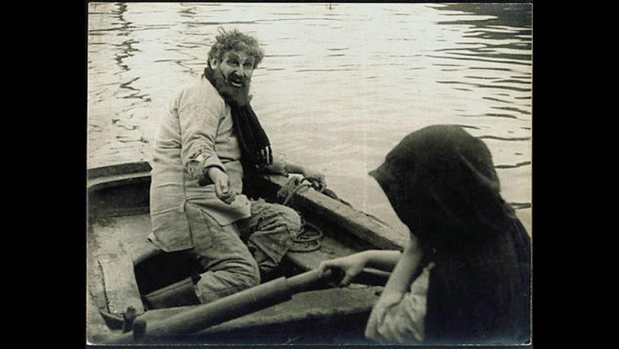

| Character | Actor |
|---|---|
| John Rokesmith | Aage Fønss |
| Bella Wilfer | Kate Riise |
| Eugene Wrayburn | Peter Malberg |
| 'Rogue' Riderhood | Svend Kornbeck |
| Nicodemus Boffin | Alfred Møller |
| Lizzie Hexam | Karen Caspersen |
| Gaffer Hexam | Peter Fjelstrup |
| Mortimer Lightwood | Egill Rostrup |
| Henrietta Boffin | Jonna Neiiendam |
| Reginald Wilfer | Carl Madsen |
| Jenny Wren | Ingeborg Frölich |
| Bradley Headstone | Peter Nielsen |
| Mrs. Wilfer | Henny Lauritzen |
| Mr. Venus | Charles Wilken |
| Silas Wegg | Bertel Krause |
| Charley Hexam | Kai Kilian |
| Role | Person |
|---|---|
| Director | A.W. Sandberg |
| Screenplay | Laurids Skands |
A 1916 silent film from Denmark; restoration by Danish Film Institute (missing about 50% of the second part) shown at Museum of Modern Art, New York, NY, in December 2012.